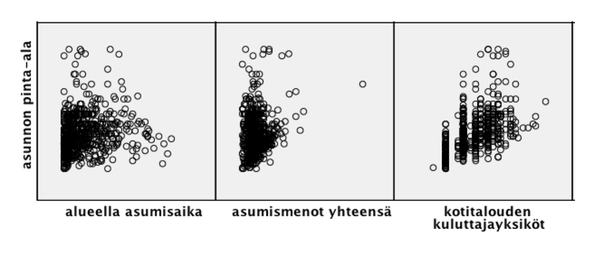

Samuli Virtanen
op. nro. 511178
Elinolo2018 (Tilastokeskuksen elinolotutkimuksen aineisto, N=2199)
Kukin opiskelija puolestaan poimii 600 kokoisen satunnaisotoksen kyseisestä datasta seuraavalla tavalla:
Transform-Random Number Generators...
Set Starting Point-Fixed Value-annetaan oma opiskelijanumero-Ok
DATA>SELECT CASES>RANDOM SAMPLE OF CASES>
EXACTLY 600 CASES FROM THE FIRST 2199 CASES
CONTINUE
UNSELECTED CASES ARE FILTERED>Tutki, onko sukupuolella ja asumisahtaudella yhteyttä asunnon pinta-alaan.
Kyseessä on kaksi kategorista selittävää muuttujaa, sekä yksi numeerinen selitettävä muuttuja, joten käytetään kaksisuuntaista varianssianalyysiä.
Ensimmäiseksi tutkitaan jakaumia sukupuolittain asumisahtauden perusteella.
Jaetaan data kahteen osaan sukupuolen perusteella.
SORT CASES BY supu.
SPLIT FILE SEPARATE BY supu.Luodaan tarvittavat kuviot ja tiedot SPSS:n Explore-työkalulla.
EXAMINE VARIABLES=pala BY ahtas
/PLOT BOXPLOT NPPLOT
/COMPARE GROUPS
/STATISTICS DESCRIPTIVES
/CINTERVAL 95
/MISSING LISTWISE
/NOTOTAL.Tulostedokumentista löytyvän Shapiro-Wilk-testin tulosten perusteella neljä ryhmää ei ole normaalisti jakautunut:
Näiden ryhmien havaintojen suuresta määrästä johtuen voidaan kuitenkin käyttää parametrista testiä. Myöskin visuaalinen tarkastelu osoittaa ryhmien olevan jokseenkin normaalijakautuneita.
Tehdään kaksisuuntainen varianssianalyysi SPSS:n Univariate-työkalulla.
SPLIT FILE OFF.
UNIANOVA pala BY supu ahtas
/METHOD=SSTYPE(3)
/INTERCEPT=INCLUDE
/PLOT=PROFILE(ahtas*supu)
/PRINT=DESCRIPTIVE HOMOGENEITY
/CRITERIA=ALPHA(.05)
/DESIGN=supu ahtas supu*ahtas.Tuloksista nähdään että selittävien muuttujien päävaikutukset ovat merkitseviä merkitsevyystasolla p<0,05, mutta yhdysvaikutus ei ole merkitsevä. (p ≈ 0.638)
Myöskään hajontojen yhtäsuuruusoletus ei näytä pitävän paikkaansa (Levenen testin p-arvo ≈ 0.014)
Voidaan tulkita että miehillä on keskimäärin suuremmat asunnot kuin naisilla, ja asunnon pinta-ala kasvaa koetun asumisahtauden mukaan järjestyksessä ahdas -> normaali -> tilava (pienestä pinta-alasta suurempaan). Koska yhdysvaikutuksella ei ole merkitystä, voidaan tulkita että sukupuolella ei ole väliä asumisahtauden eroissa.
Tutkitaan vielä monivertailut estimoiduilla keskiarvoilla.
UNIANOVA pala BY supu ahtas
/METHOD=SSTYPE(3)
/INTERCEPT=INCLUDE
/PLOT=PROFILE(ahtas*supu)
/EMMEANS=TABLES(supu) COMPARE ADJ(SIDAK)
/EMMEANS=TABLES(ahtas) COMPARE ADJ(SIDAK)
/EMMEANS=TABLES(supu*ahtas)
/PRINT=ETASQ DESCRIPTIVE HOMOGENEITY
/CRITERIA=ALPHA(.05)
/DESIGN=supu ahtas supu*ahtas.Tulostedokumentista löytyvän Pairwise comparisons -taulukon perusteella voidaan todeta kaikkien asumisahtaustasojen välillä olevan tilastollisesti merkittäviä eroja. (p < 0.001)
Tutki, onko kotitalouden kuluttajayksiköiden lukumäärällä, asumismenoilla yhteensä ja alueella asumisajalla yhteyttä asunnon pinta-alaan.
Tutkitaan sirontakuvioita.

Kovin selkeitä korrelaatioita ei esiinny. Näyttäisi kuitenkin hieman siltä että kodin kuluttajayksiköiden määrän kasvaessa myös asunnon pinta-ala kasvaa ja toisaalta samoin käy myös asumismenojen kasvaessa. Yksi outlier asumismenoissa hankaloittaa hieman kuvan tulkintaa.
Tutkijalla on hypoteesi, että potilaan mielestä saatu ohjaus leikkauksen jälkeen toiminnallista seikoista (Functional_M2) on ollut vähäisempää kuin odotettu ennen leikkausta (Functional_M1). Eli keskiarvo toisessa mittauksessa on matalampi. Lisäksi kiinnostaa se, onko tuo ero mittausten välillä erilainen sukupuolittain.
Tutki saavatko nämä tutkimushypoteesit tukea mallittamalla aineisto toistettujen mittausten varianssianalyysillä.
Huom. Numeeristen vastemuuttujien mallituksessa on varianssianalyysien osalta tehtävä tarvittava kuvaileva tarkastelu ja regressiomallissa yhteyksien suoraviivaisuuksien tarkastelu ja jäännöstarkastelu.